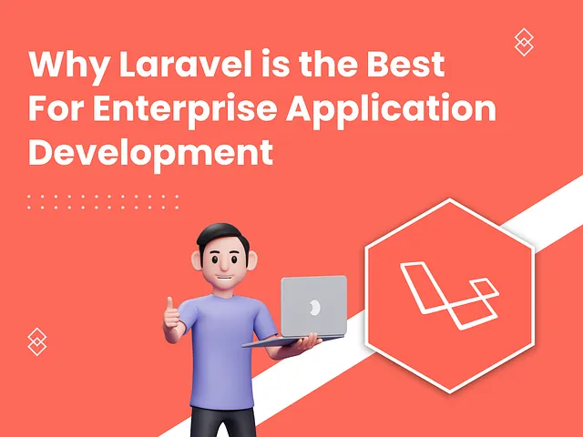
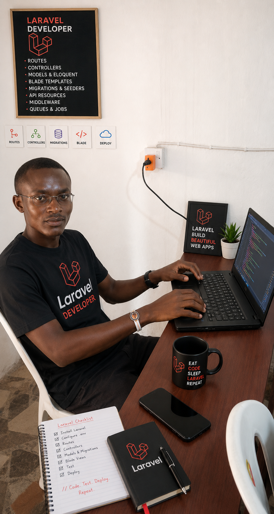
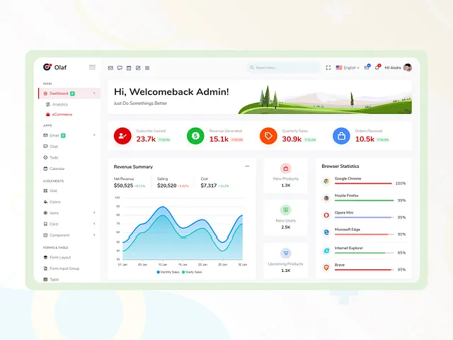
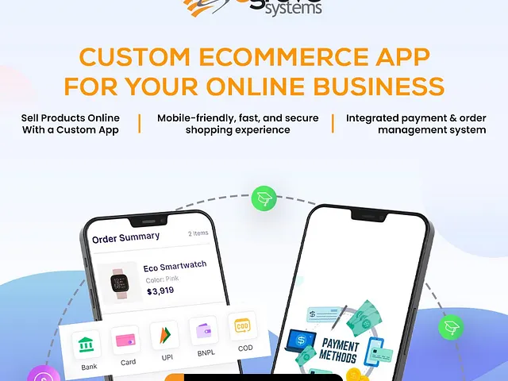
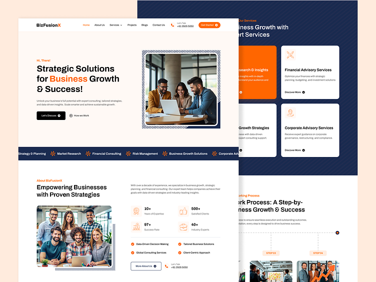
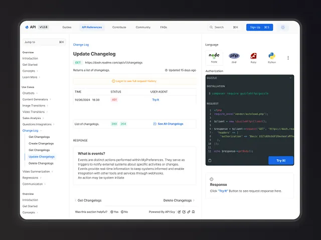
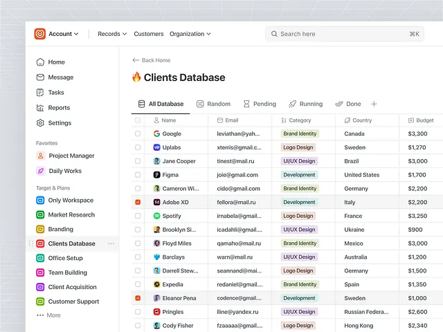
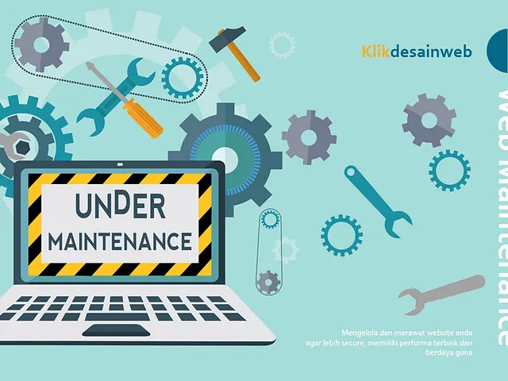
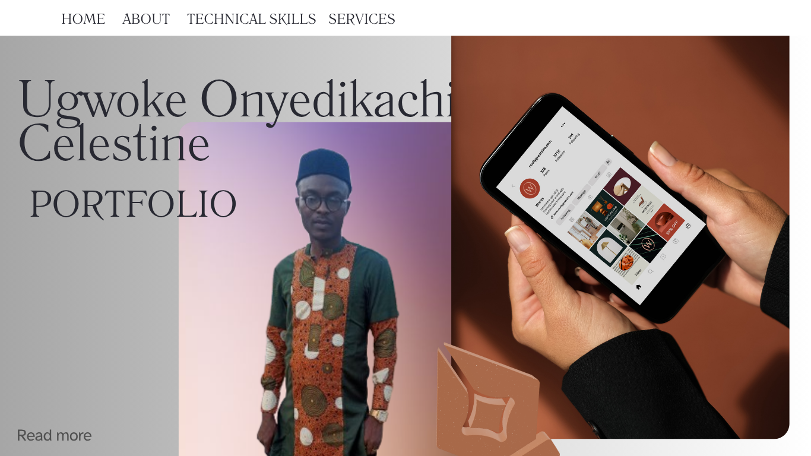
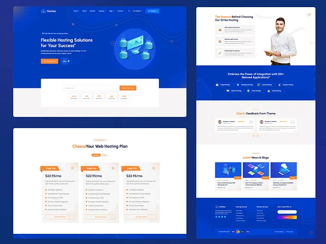

Laravel Web Application Development
Skilled in Laravel MVC architecture, Eloquent ORM, authentication and authorization systems, API integrations, and performance optimization.
See More
I am a passionate and results-driven PHP Laravel Full Stack Web Developer with experience in designing, developing, and maintaining scalable web applications. I specialize in building modern, secure, and user-friendly web solutions using Laravel, PHP, MySQL, JavaScript, HTML, CSS, and related technologies.
Learn moreUsing PHP Laravel and modern web technologies, I create websites that are secure, fast, scalable, and optimized for both desktop and mobile devices. Every project is developed with a focus on user experience, functionality, and business growth.
Experienced in developing secure, scalable, and high-performance web applications using the Laravel framework. Proficient in designing and implementing custom web solutions, building RESTful APIs, managing databases, and developing backend functionalities that support business operations.
Skilled in Laravel MVC architecture, Eloquent ORM, authentication and authorization systems, API integrations, and performance optimization.
Adept at creating maintainable code, troubleshooting application issues, and collaborating with cross-functional teams to deliver reliable and user-friendly web applications.

Skilled in Laravel MVC architecture, Eloquent ORM, authentication and authorization systems, API integrations, and performance optimization.
See More
Skilled in developing secure, user-friendly, and maintainable solutions that streamline business processes, improve operational efficiency, and support organizational growth.
See More
Experienced in developing secure, responsive, and feature-rich e-commerce websites that provide seamless online shopping experiences.
Skilled in building product management systems, shopping carts, order processing workflows, payment gateway integrations, inventory management solutions, and customer account portals.
Proficient in implementing secure transaction processing, optimizing website performance, and creating scalable e-commerce platforms that enhance customer engagement, increase sales, and support business growth.
See More
Professional business website development services designed to help organizations establish a strong online presence, attract customers, and grow their brand.
I develop modern, responsive, and user-friendly websites tailored to meet the unique needs of businesses across various industries.
See More
Using PHP Laravel and industry best practices, I build robust RESTful APIs that support web applications, e-commerce platforms, and business management systems.
I am committed to delivering reliable API solutions that connect systems efficiently, streamline business processes, and support the growth of modern web applications.
See More
I provide professional database design and management services focused on creating secure, efficient, and scalable database solutions for web applications and business systems. With expertise in MySQL and Laravel, I design well-structured databases that ensure data integrity, high performance, and seamless application functionality.
From initial database architecture to ongoing maintenance and optimization, I develop solutions that support business growth while ensuring reliable data storage and retrieval.
My goal is to build and manage reliable database systems that provide secure data storage, optimal performance, and a strong foundation for modern web applications and business operations.
See More
I provide comprehensive website maintenance and optimization services to ensure websites remain secure, up-to-date, fast, and fully functional. Regular maintenance is essential for delivering an excellent user experience, protecting against security threats, and maintaining optimal website performance.
With expertise in PHP, Laravel, MySQL, JavaScript, and modern web technologies, I proactively monitor, update, and optimize websites to maximize reliability, speed, and efficiency.
I am committed to keeping websites running smoothly, securely, and efficiently while ensuring they continue to meet business goals and provide an exceptional experience for users.
See More
I provide professional bug fixing and troubleshooting services for web applications and websites, ensuring optimal performance, security, and reliability. With expertise in PHP, Laravel, MySQL, JavaScript, and related technologies, I identify, analyze, and resolve technical issues efficiently to minimize downtime and improve user experience.
Whether it's a functionality error, performance issue, database problem, or server-related challenge, I apply systematic debugging techniques to deliver effective and long-lasting solutions.
My goal is to quickly diagnose and resolve technical issues while ensuring your website or web application remains stable, secure, and fully functional.
See More
My goal is to build websites that not only look great but also provide an intuitive user experience, improve engagement, and support business growth.
I am dedicated to delivering responsive website solutions that combine modern design, functionality, and performance to help businesses effectively engage their audience and achieve their online objectives.
See More
I provide professional website deployment and hosting setup services to ensure web applications and websites are launched securely, efficiently, and with minimal downtime. From configuring hosting environments to deploying Laravel applications and managing domains, I ensure that websites are optimized for performance, security, and reliability.
My deployment process follows industry best practices, ensuring smooth transitions from development to production environments while maintaining application stability and data integrity.
implementing version control best practices and automated deployment processes, I ensure code quality, collaboration efficiency, and reliable application releases.
See More